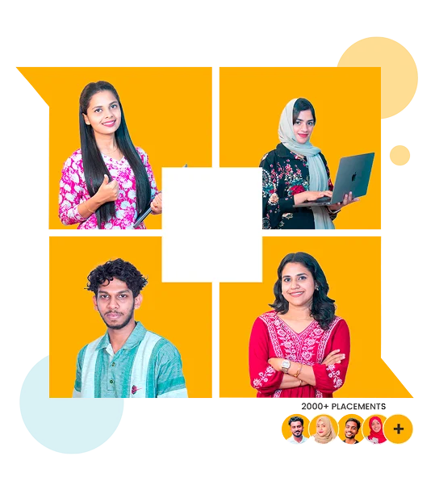

Kerala's No. 1
Software Training
Institute
Leaders in education since 2018, empowering minds and shaping the future.
Leaders in education since 2018, empowering minds and shaping the future.

Contact Us
learn python and full stack development